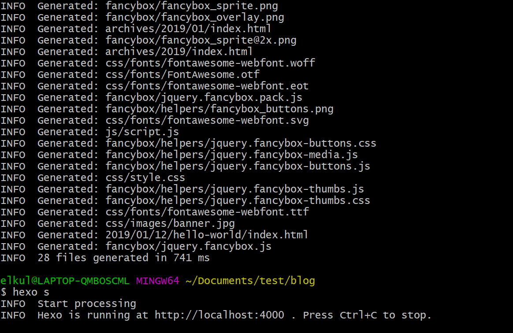
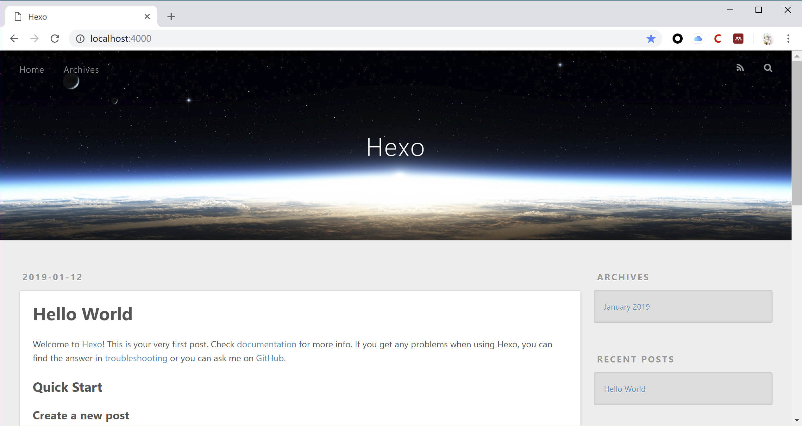
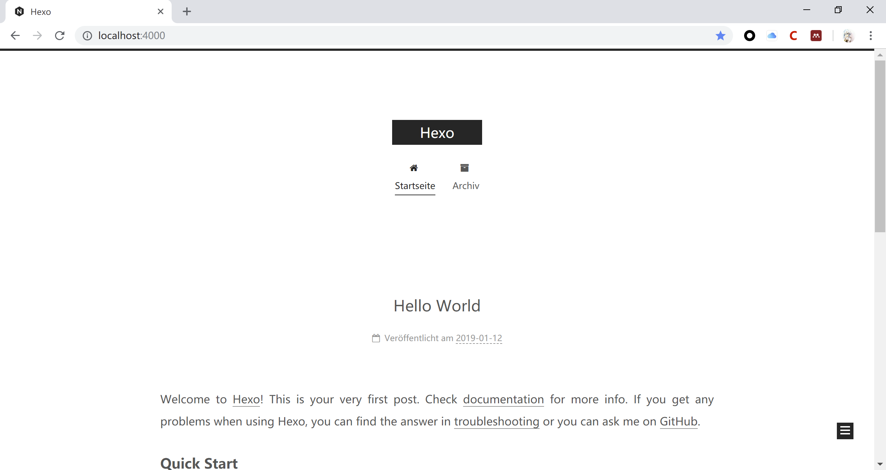
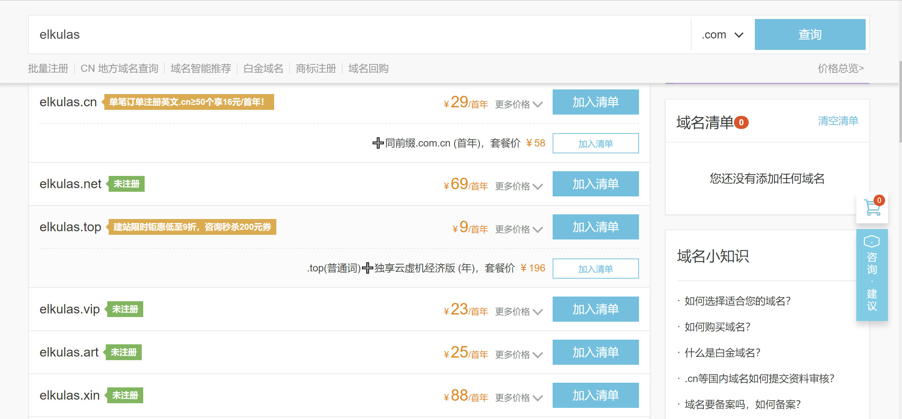
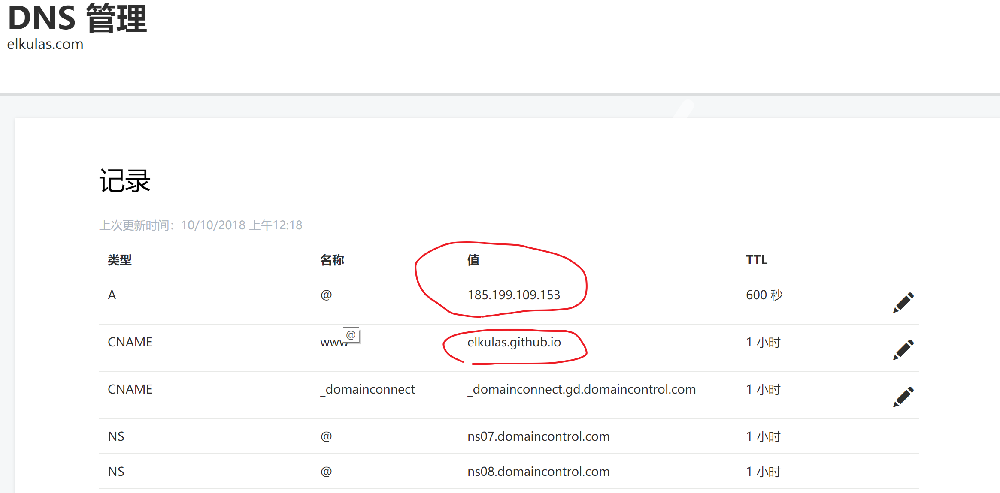
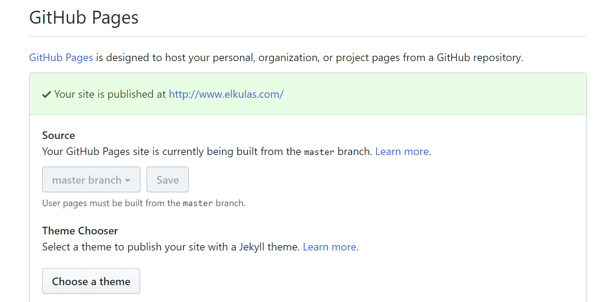

使用Github与Hexo搭建个人网站
为什么搭建
目前市面上有较多的商用博客可以使用，比如简书与Medium都是优秀的平台。但自己搭建的博客比较自由，不受太多的约束，并且在中间可以学到较多的东西。在以后的简历中也可以进行附加来作为一项技能和展示能力的平台。
框架选择
当然我们不需要从头开始一点一点自己用html来进行网站的搭建。目前市面上有较多的优秀框架。我们只需要进行部署、配置便可以进行使用。对于展示而言使用框架是最方便且可维护性较高的，同时网上有较多的教程以及问题解决。目前常见的平台有Hexo 、Ghost 以及Wordpress 。其中Hexo与Ghost可以使用markdown来进行文章的写作，比较适合轻量级的博客写作。
部署方案
这里可以使用两种部署方案：
- Github
- VPS
Github每一个账号只能有一个仓库来存放个人主页，而且仓库的名字必须是username/username.github.io。在创建仓库结束之后便可以使用http://username.github.io 来访问你的个人主页。
对于VPS方法，可以向服务器供应商租用服务器，然后在属于自己的服务器上进行网页搭建。常用的服务器供应商有Vultr，Bandwagon以及阿里云腾讯云等等。
这里我们选择使用Github.
系统环境配置
首先我们在本地实现Hexo网页渲染。要使用Hexo，首先系统需要支持Nodejs以及Git。
以下过程主要是对于windows环境，对于linux以及macos差别不是很大，可以参考。
安装Node.js
安装Git
下载地址 关于Git的教程，这边推荐一下廖雪峰的Git教程，对于Git入门有较大帮助
安装Hexo
首先在指定目录下新建一个文件夹，比如叫做Hexo。在文件夹内部右键打开Git Bash（Git Bash Here）
安装Hexo
1 | npm install hexo-cli -g |
在blog目录下初始化Hexo，当然也可以是你定义的名字
1 | hexo init blog |
进入博客根目录，安装插件以及依赖
1 | cd blog |
安装完毕之后进行本地渲染，并在本地跑一个server观察渲染状态
1 | hexo g # 本地渲染 |
完成以上两步之后窗口如下

按照提示可以打开http://localhost:4000，便可以看到本地渲染的Hexo网页。

那么恭喜，Hexo已经可以完成本地的静态渲染，下一步就是将本地渲染后的文件发布到服务器上。
这里提一下Hexo常用的指令：
hexo generate (hexo g)生成静态文件，会在当前目录下生成一个新的叫做public的文件夹hexo server (hexo s)启动本地web服务，用于博客的预览hexo deploy (hexo d)部署播客到远端（比如github, heroku等平台）
对于更多的Hexo指令，可以参见Hexo官方文档。
Hexo主题设置
Hexo框架另一个重要特性就是可以使用多种多样的主题，同时自己也可以设置属于自己的主题并上传分享。官方网站上便有许多的主题模板，通过下载便可以进行主题安装。目前默认的主题是Landscape，这里我使用NexT作为例子进行示例。
在当前目录下下载主题
1 | hexo clean |
完成这步之后再Themes文件夹下便会出现next的主题文件夹。
打开blog目录下的_config.yml文件，找到关于Themes的配置，将其改为next。
1 | # Extensions |
更新主题并生成
1 | cd themes/next |
现在打开http://localhost:4000/ ，会看到我们已经应用了一个新的主题。

关于NexT这个主题有较多的学习材料，并且NexT有很多有意思的插件以及优化方法，这里大家可以自行去探索。
部署Hexo至Github Pages
相比于一些VPS，使用Github Pages的优势是免费稳定。再继续之前，需要保证一些基本的Github操作，如建立库，更新库，SSH key配置等等。可以参照廖雪峰的Git教程以及使用GitHub Pages建独立博客。
创建Github Pages
在自己的库中创建项目库，库的名称为你的用户名.github.io，在创建好库之后，提交一个index.html文件, 然后push到Github上的master分支上，此时便可以生成页面。
在页面生效之后，便可以使用你的用户名.github.io来访问页面。初始界面如beiyuu.github.io所示。
使用Hexo d进行部署
在继续之前先讲一下部署的原理。之前步骤中创建的项目库你的用户名.github.io 一个最大的特点，就是master分支下的html静态文件，可以通过外部链接你的用户名.github.io来进行直接访问。而在本地hexo g可以本地渲染生成一个静态的网站，同时，这个静态的文件可以进行直接访问。因此我们部署的本质就是将本地的静态文件提交（git commit）到Github上。
我们进行部署使用的指令是git deploy， 倘若我们部署到Github上，我们需要对配置文件_config.yml中作以下修改：
1 | Deployment |
其中这里库的名字需要改成自己用户名的名字。
在完成之后，在命令行中执行
1 | hexo d |
便可以完成部署
NOTICE
- 注意需要提前安装这个扩展
1 | npm install hexo-deployer-git --save |
- 如果出现下面这样的错误，
1 | Permission denied (publickey). |
则是没有设置好本机的Public Keys的缘故，需要再重新进行本机的SSH配置。
至此，可以通过你的用户名.github.io来进行网站访问
购买与绑定域名
当然做到这一步还是不够的，比如每次向别人发送个人网站时候，后面总会带有一串github.io，虽然不影响使用，但是看起来不是特别好看。因此，最重要的美化就是使用域名。
购买域名
目前有较多的域名提供商可以选择，比如阿里系下的万网，以及一些别的国外域名商，如GoDaddy等。通过这些网站可以购买相应的域名。其中.com域名是最贵的，也是逼格最高的。对于日常使用而言其实没有必要购买.com域名，使用.top或者.net都可以。而且，字母越短越贵，所以大家可以好好考虑一下。

这里我以Elkulas为例，在GoDaddy平台上进行域名购买与配置。当然这些配置流程在万网上也是一样的，同时网上也有较多的教程可以参考。
域名绑定
进入购买之后的域名管理器界面，对购买的域名进行DNS解析。

将红圈内的内容分别修改为你的用户名.github.io的ip地址以及你的用户名.github.io。对于ip地址，可以使用ping 的方法进行获取。
保存之后，进入Github中，在github.io项目库的设置中找到如下的设置项，将购买后的域名填入。

这里因为已经绑定所以会如图所示。随后在本地的Hexo目录下的source文件夹内，新建一个名字为CNAME的文件，文件内写入你购买的域名名称。保存，然后进行Git提交。当然你也可以使用以下的方式进行设置。
1 | cd source/ |
配置结束之后便实现了域名与Github Pages的成功绑定
NOTICE
千万千万千万要注意
一定要添加CNAME文件,不然实际进行deploy之后,访问域名还是会出现404的情况!!!!!!